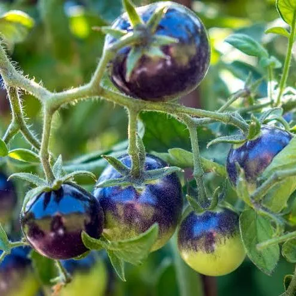
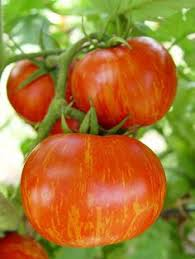

Much More than Ketchup
Blue tomatoes
Blue tomatoes are a unique variation of the traditional tomato, distinguished by their striking blue or purple hue, which results from high levels of anthocyanins, a type of antioxidant. This color not only makes them visually appealing but also enhances their nutritional profile, providing potential health benefits such as improved heart health and reduced risk of chronic diseases. Developed through selective breeding and genetic research, blue tomatoes have gained popularity among gardeners and health enthusiasts alike. These tomatoes retain a similar taste and texture to their red counterparts while offering a novel twist to familiar dishes. Culinary enthusiasts have embraced blue tomatoes for their eye-catching presentation, often using them in salads, sauces, and gourmet recipes to create vibrant and nutritious meals. As research continues into the potential health benefits of anthocyanins, blue tomatoes may pave the way for a new wave of horticultural innovation and interest in nutritional diversity.

Tigerella
Tigerella tomatoes are a distinctive heirloom variety known for their striking appearance and robust flavor. Characterized by their vivid red-orange skin adorned with dark, tiger-striped patterns, these tomatoes are visually captivating and make any dish stand out. Originating from the UK, Tigerella tomatoes are often celebrated for their slightly tangy taste, which adds complexity to salads, sauces, and salsas. They are also valued for their versatility in the kitchen, easily complementing both savory and sweet dishes. In addition to their aesthetic and culinary appeal, Tigerella tomatoes are relatively easy to grow, making them a favorite among home gardeners. Their unique appearance, delightful flavor, and ease of cultivation contribute to their popularity in both gardens and kitchens around the world.
Amazing Recipes
Other random tomatoes with cool names
- Brandy Wine
- Ananas Niore
- Black Kim
- Green Zebra